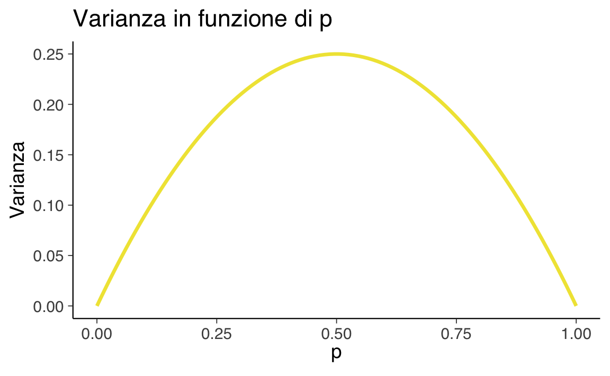

\(X \sim \mathcal{Bern}(p)\), o in maniera equivalente \(\mathcal{Bern}(X \mid p)\).
3.2 Storia
In statistica, un esperimento che ammette solo due esiti possibili è modellato con la cosiddetta prova Bernoulliana. Un esempio classico è il lancio di una moneta, che può dare come risultato “testa” o “croce”.
Definizione 3.1 Una variabile casuale \(X\) che assume valori in \(\{0, 1\}\) è detta variabile di Bernoulli.
3.3 Esempi
La distribuzione di Bernoulli modella fenomeni binari come risposta corretta / errata, scelta sì / no, esito positivo / negativo, presenza / assenza di un sintomo.
3.4 Parametri
Un solo parametro: \(p \in [0,1]\), probabilità di successo.
3.5 Supporto
Il supporto della distribuzione di Bernoulli è l’insieme discreto:
dove \(0 \leq p \leq 1\). Il parametro \(p\) rappresenta la probabilità di “successo” (\(X = 1\)), mentre \(1 - p\) è la probabilità di “insuccesso” (\(X = 0\)).
La varianza è massima quando $p = 0.5$, cioè quando l’incertezza è maggiore (successo e insuccesso sono equiprobabili).
Codice
p<-seq(0, 1, length.out =100)variance<-p*(1-p)ggplot(data.frame(p, Variance =variance), aes(x =p, y =Variance))+geom_line(color =okabe_ito_palette[4], linewidth =1.2)+labs( x =expression(p), y ="Varianza", title ="Varianza in funzione di p")

Esempio 3.1 Nel caso del lancio di una moneta equilibrata, la variabile di Bernoulli assume i valori \(0\) e \(1\) con uguale probabilità di \(\frac{1}{2}\). Pertanto, la funzione di massa di probabilità assegna una probabilità di \(\frac{1}{2}\) sia per \(X = 0\) che per \(X = 1\), mentre la funzione di distribuzione cumulativa risulta essere \(\frac{1}{2}\) per \(X = 0\) e \(1\) per \(X = 1\).
Generiamo dei valori casuali dalla distribuzione di Bernoulli. Iniziamo con un singolo valore:
Codice
# Probabilità di successop<-0.5# Genera un singolo valorebernoulli_sample<-rbinom(n =1, size =1, prob =p)print(bernoulli_sample)#> [1] 1# Genera un campione di 10 valoribernoulli_sample<-rbinom(n =10, size =1, prob =p)print(bernoulli_sample)#> [1] 0 1 1 0 1 0 1 0 1 1